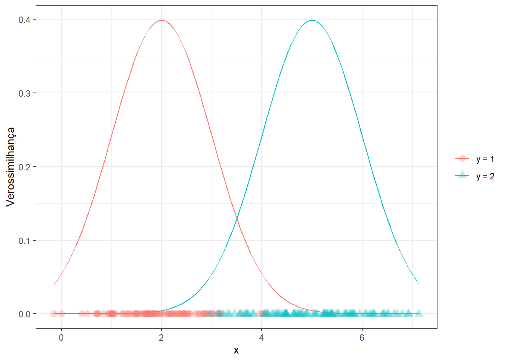
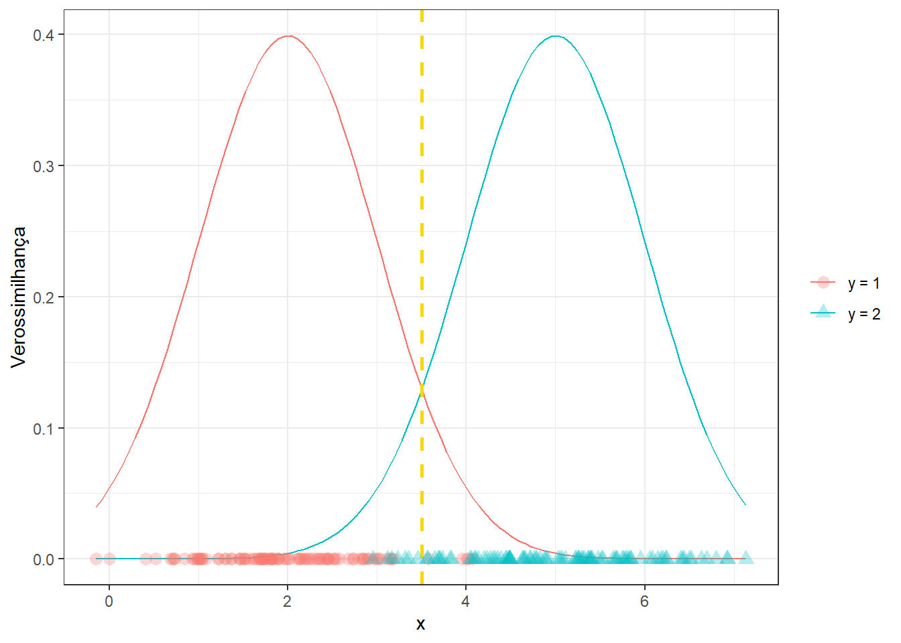
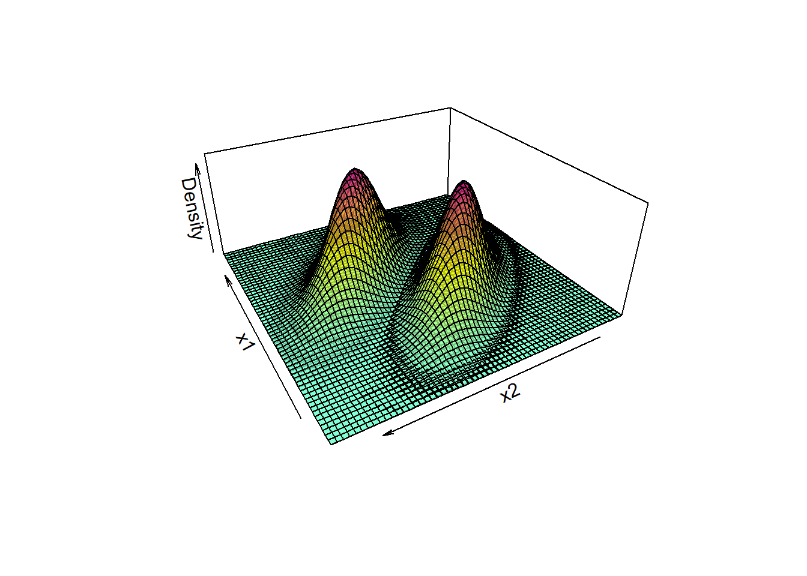

Classificação via análise linear discriminante
Análise linear discriminante binária simples
A análise linear discriminante é um método de esta´tiica multivariada concebido por Fisher, hoje usado para aprendizado supervisionado em problemas de classificação. Seja um problema de classificação de uma variável de resposta de interesse, \(y={0,1}\) em função de uma variável independente, \(x \in \mathcal{R}\). Pelo teorema de Bayes, pode-se trabalhar a probabilidade condicional de \(y\) pertencer a uma classe de interesse dado um valor de \(x\), por exemplo, \(p(y=1|x)\), conforme segue.
\[ p(y=1|x) = \frac{p(x|y=1)p(y=1)}{p(x)} \]
Onde \(p(x|y=1)\) é a verossimilhança que consiste na probabilidade de \(x\) dado que \(y=1\) é verdade, podendo ser aproximada pela função densidade de probabilidade de \(x\) dado que \(y=1\). \(p(y=1)\) seria a probabilidade de \(y\) pertencer à classe 1, a qual pode ser estimada a partir da proporção dos dados de treino correspondentes. Por fim, \(p(x)\) seria a probabilidade da variável independente, que pode ser aproximada pela lei da probabilidade total, \(p(x)=\) Tomando a distribuição normal, a verossimilhança pode ser aproximada conforme segue, onde \(\mu_1\) e \(\sigma_1\) são, respectivamente, a média e o desvio-padrão da distribuição de \(x\) dado que \(y=1\), os quais podem ser aproximados por dados amostrais.
\[ p(x|y=1)=f_1(x)=\frac{1}{\sqrt{2\pi}\sigma_1}e^\frac{-(x-\mu_1)^2}{2\sigma_1} \]
De forma geral a análise linear discriminante considera que as distribuições de \(x\) para as classes de interesse apresentam igual variabilidade, \(\sigma=\sigma_1=\sigma_2\). No caso de problemas de classificação deseja-se ao final saber o valor de \(x\) que discrimina as classes de interesse. A seguir observam-se dados de duas classes distintas em função de uma única variável regressora e as densidades teóricas correspondentes de \(x\) dado que \(y\) pertence a cada uma das classes.
Aplicando os conceitos explicados na formulação inicial, tem-se:
\[ p(y=1|x) = \frac{p(y=1)\frac{1}{\sqrt{2\pi}\sigma}e^\frac{-(x-\mu_1)^2}{2\sigma}}{p(x)} \]
Assim como na regressão logística, pode-se usar o log da razão de chance para facilitar a discriminação. O logaritmo facilita a separação dos produtos e da razão em soma e subtração, respectivamente.
\[ \begin{align} \text{log } \biggl(\frac{p(y=1|x)}{p(y=2|x)}\biggr) & = \text{log } \biggl(\frac{f_1(x)}{f_2(x)}\frac{p(y=1)}{p(y=2)}\biggr) \\ & =\text{log } \frac{f_1(x)}{f_2(x)}+ \text{log }\frac{p(y=1)}{p(y=2)} \\ \end{align} \]
Supondo o equilíbro entre as classes, \(\text{log }\frac{p(y=1)}{p(y=2)} = 0\). Logo,
\[ \begin{align} \text{log } \biggl(\frac{p(y=1|x)}{p(y=2|x)}\biggr) & = \frac{\frac{1}{\sqrt{2\pi}\sigma}e^\frac{-(x-\mu_1)^2}{\sigma}}{\frac{1}{\sqrt{2\pi}\sigma}e^\frac{-(x-\mu_2)^2}{\sigma}} \end{align} \]
Fazendo as devidas simplificações e considerando o logaritmo neperiano, tem-se:
\[ \begin{align} \text{log } \biggl(\frac{p(y=1|x)}{p(y=2|x)}\biggr) & = \frac{\mu_2^2-\mu_1^2}{2\sigma^2} + x\frac{\mu_1-\mu_2}{\sigma^2} \end{align} \]
Se o log da razão de chance for maior que 0, então classifica-se \(y\) como pertencente à classe 1. Se, ao contrário, for menor que 0, \(y\) é classificado para a classe 0. As estimativas da média condicional e da variância são calculadas conforme segue, onde \(c = {1,2}\) e \(C=2\) para o caso binário.
\[ \hat{\mu}_c = \frac{1}{n_c}\sum_{i:y_i=c}x_i \\ \hat{\sigma}^2=\frac{1}{n-C}\sum_{c=1}^C\sum_{i:y_i=c}(x_i-\hat{\mu}_i)^2 \]
Considerando o log da razão de chance nulo e resolvendo para \(x\), pode-se obter a fronteira de decisão, que no caso simples consiste na média das médias da variável independente condicional às classes.
\[ x=\frac{\mu_1+\mu_2}{2} \]
Neste sentido, pode-se retomar o exemplo plotado anteriormente com a fronteira de decisão. Pode-se observar que a fronteira maximiza as probabilidades de verdadeiros positivos e negativos e minimiza as probabilidades de falsos positivo e negativo.

Analogia com a regressão logística
Tomando novamente o logaritmo da razão de chance, os coeficientes de regressão logística podem ser definidos com base nestes parâmetros, de forma que os resultados dos dois classificares são análogos.
\[ \beta_0 = \frac{\mu_2^2-\mu_1^2}{2\sigma^2} \\ \beta_1 = \frac{\mu_1-\mu_2}{\sigma^2} \]
Função linear discriminante de Ficher
Fisher também determinou uma função linear discriminante, a qual visa maximizar a variância entre os grupos relativamente à variância comum dentro dos grupos. A função é expressa a seguir, consistindo no termo do log da razão de chance que contém \(x\).
\[ u(x) = \frac{\mu_1-\mu_2}{\sigma^2}x \]
LDA para \(k\) variáveis independentes e duas classes
Seja o caso onde deseja-se realizar uma classificação binária em função de \(k\) variáveis independentes, \(x_1, x_2, ..., x_k\). Tais variáveis podem ser condensadas em um vetor \(k\)-dimensional, \(\mathbf{x} = [x_1, x_2, ..., x_k]^T\). O teorema de Bayes pode ser novamente usado, porém a verossimilhança será expressa pela função densidade de probabilidade multivariada, que no caso normal, considerando a classe \(y=1\), fica conforme segue.
\[ p(\mathbf{x}|y=1)=f_1(\mathbf{x})=\frac{1}{(2\pi)^{k/2}|\Sigma|^{1/2}}e^{-\frac{1}{2}(\mathbf{x}-\mu_1)^T|\Sigma|^{-1}(\mathbf{x}-\mu_1)} \] Na função de densidade normal multivariada, \(\mu_1\) consiste no vetor de médias para as \(k\) variáveis independentes, condicional a \(y=1\), \(\mu_1 = [\bar{x}_{1,y=1},\bar{x}_{2,y=1},...,\bar{x}_{k,y=1}]^T\) e \(\Sigma\) consiste na matriz de covariância comum às duas classes.
\[ \Sigma = \biggl[ \begin{matrix} \sigma_1^2 & \sigma_{12} \\ \sigma_{21} & \sigma_2^2 \end{matrix} \biggr] \]
A seguir, plotam-se densidades bivariadas de dados de um caso classificação binária.

Sem a necessidade de repetir as deduções anteriores, pode-se escrever o log da razão de chance para o caso multivariado conforme segue. Se o logit for maior que 0, então y=1.
\[ \text{log } \biggl(\frac{p(y=1|\mathbf{x})}{p(y=2|\mathbf{x})}\biggr) = (\mu_1-\mu_2)^T\Sigma^{-1}\mathbf{x} - \frac{1}{2}(\mu_1-\mu_2)^T\Sigma^{-1}(\mu_1+\mu_2) \]
LDA para \(k\) variáveis independentes e três ou mais classes
No caso de três ou mais classes é conveniente trabalhar uma função discriminante a partir do teorema de Bayes, sem uso da razão de chance. Tomando apenas o numerador, uma vez que o denominador é constante à todas as classes, tem-se para a \(c\)-ésima classe, \(c=1,2,...,C\).
\[ p(y=c|\mathbf{x}) =p(\mathbf{x}|y=c)p(y=c) \]
Aplicando o logaritmo, pode-se elminar o segundo termo da soma dos logs, uma vez que este será igual para todas as classes, em casos de igualdade de observações entre estas, \(n_1,n_2,...,n_c\). Após aplicar a verossimilhança pode-se também eliminar o termo \(\frac{1}{(2\pi)^{k/2}|\Sigma|^{1/2}}\), uma vez que será constante para todas as classes.
\[ \begin{align} \text{log }(p(y=c|\mathbf{x})) & =\text{log } (p(\mathbf{x}|y=c)p(y=c)) \\ & = \text{log } p(\mathbf{x}|y=c) + \not{\text{log }p(y=c)} \\ & \simeq \text{log } \frac{1}{(2\pi)^{k/2}|\Sigma|^{1/2}}e^{-\frac{1}{2}(\mathbf{x}-\mu_c)^T|\Sigma|^{-1}(\mathbf{x}-\mu_c)} \\ \end{align} \]
Logo, a função discriminante para a c-ésima classe pode ser deduzida conforme segue, sendo o primeiro termo após a expansão dos produtos eliminado, visto que não depende da classe.
\[ \begin{align} u(\mathbf{x}) & = -\frac{1}{2}(\mathbf{x}-\mu_c)^T|\Sigma|^{-1}(\mathbf{x}-\mu_c) \\ & = \not{-\frac{1}{2}\mathbf{x}^T\Sigma^{-1}\mathbf{x}} + \frac{1}{2}\mu_c^T\Sigma^{-1}\mathbf{x} + \frac{1}{2}\mathbf{x}^T\Sigma^{-1}\mu_c-\frac{1}{2}\mu_c^T\Sigma^{-1}\mu_c \\ u(\mathbf{x}) & = \mathbf{x}^T\Sigma^{-1}\mu_c-\frac{1}{2}\mu_c^T\Sigma^{-1}\mu_c \\ \end{align} \]